PhD defense, University of Crete, 14 September 2026
Trustworthy non-Gaussian inference for weak-lensing cosmology
Doctoral thesis in Physics
Thirteen point eight billion years, from quantum fluctuations to galaxies
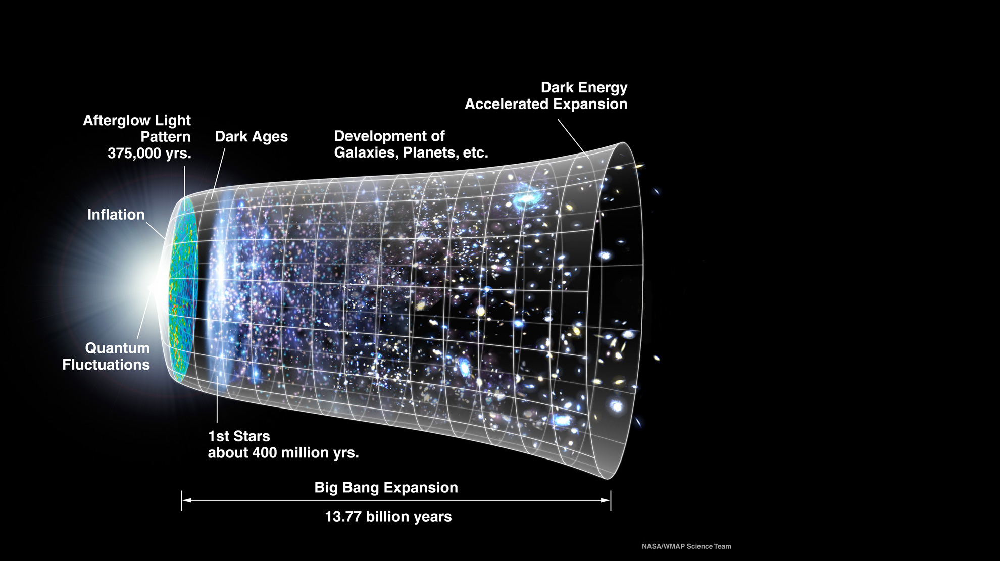
ΛCDM: six numbers, and the assumptions that
let you get away with six
Initial conditions
$A_s,\; n_s$
amplitude and tilt of the primordial fluctuation spectrum
Composition
$\Omega_b h^2,\; \Omega_c h^2$
how much ordinary matter, how much cold dark matter
Expansion & reionisation
$\theta_*,\; \tau$
the sound-horizon angle, and when the Universe reionised
Gravity — general relativity, unmodified
Geometry — spatially flat, homogeneous and isotropic on large scales
Contents — cold dark matter (collisionless, non-relativistic), baryons,
radiation, and a constant $\Lambda$
Initial conditions — adiabatic, near-Gaussian and near-scale-invariant,
from inflation
A phenomenological description, not an explanation. About 95 % of the budget is two
components whose nature we do not know, and the value of $\Lambda$ is put in by hand.
How we test it: independent probes of geometry and
growth
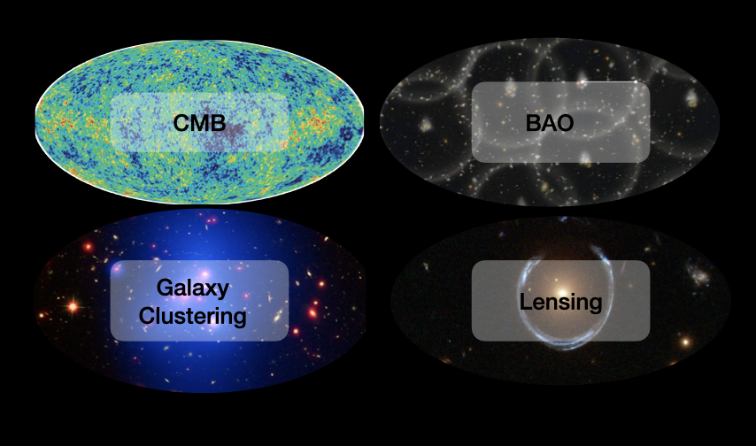
CMB the initial conditions and the geometry to
z ≈ 1100
BAO + SNe the expansion history
Galaxy clustering the growth of structure, through biased tracers
Weak lensing the total matter directly, sensitive to both
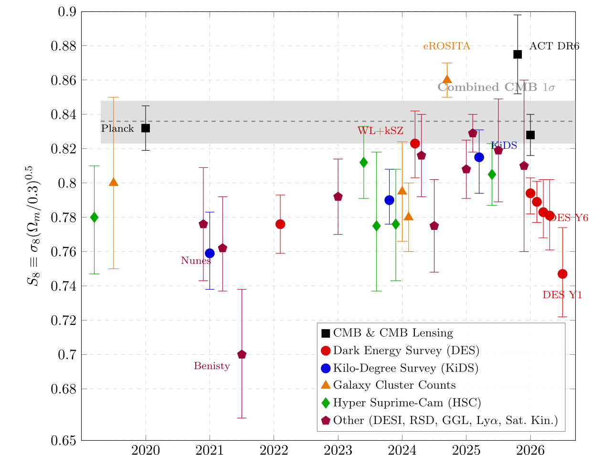
the clustering amplitude — late-time probes sit low
against the CMB bandPantos & Perivolaropoulos 2026,
arXiv:2602.12238
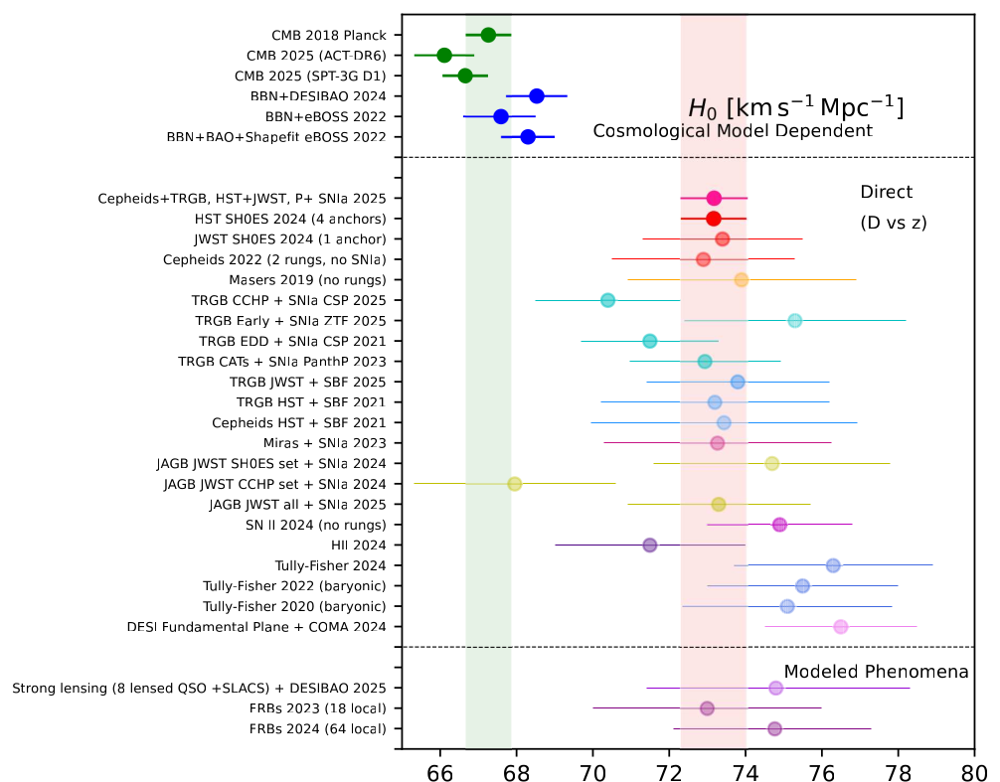
the expansion rate — the early-Universe extrapolation
against the distance ladderDi Valentino, Levi Said & Saridakis
2025, arXiv:2509.25288
three readings
new physics, a statistical fluctuation, or something in the analysis
Mass between us and a galaxy bends the light, and
distorts the image we see
UNIONS, reconstructed with MCALens — the real thing, mask and
all
and it is the easier object to work with
$\kappa$ is a scalar — one number per pixel. The shear is spin‑2: two
components that turn with the coordinate frame. Theory predicts $\kappa$, and every statistic
in this talk is measured on it.
One potential, two observables — and the relation between them is
exact
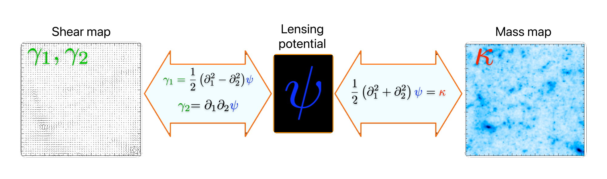
$\gamma_i = \hat{P}_i\,\kappa$ — mass to shear
$\kappa = \hat{P}_1\gamma_1 + \hat{P}_2\gamma_2$ — shear back to mass
linear, and exact on a complete noiseless field
Relation between $\kappa$ and $\gamma$
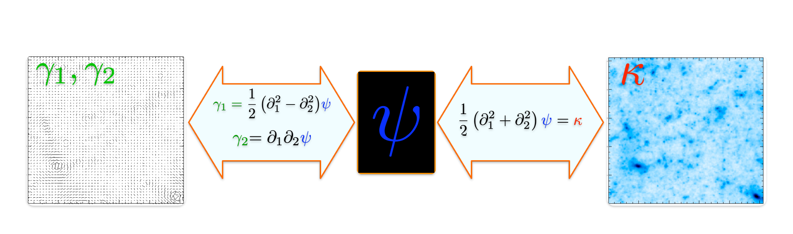
From convergence to shear: $\,\, \gamma_i
=
\hat{P}_i \kappa$
From shear to convergence: $\,\, \kappa =
\hat{P}_1 \gamma_1 + \hat{P}_2 \gamma_2$
In theory optimal.
In practice, $\{ \textrm{noise, masks, irregular sampling of galaxies,
mass-sheet degeneracy} \} \longrightarrow$ ill-posed
inverse problem
A real weak-lensing analysis is dozens of steps,
and most of them are not the physics
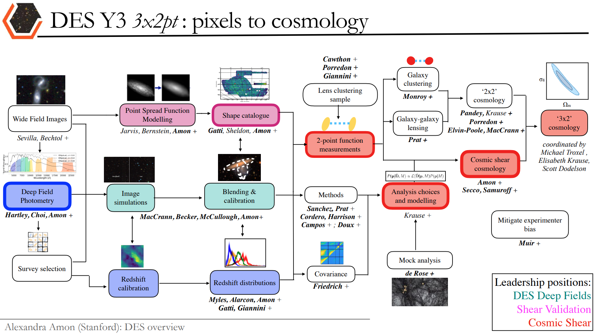
DES Y3 3×2pt — figure: Alexandra Amon, DES collaboration
Nearly every box is its own paper, and most of them are measurement — PSF modelling,
shape calibration, blending, redshift distributions, covariances. The cosmology is the
last two boxes on the right.
Between the galaxy shapes and the parameters there is a chain
Every one of those stages is now built out of learned components, and every one of them
can bias the answer, or quietly throw information away, with no internal check noticing.
The next two parts live in one step of it — shear in, a mass map out.
Everything in Parts 1 and 2 is about what happens between those two boxes.
Between the galaxy shapes and the parameters there is a chain
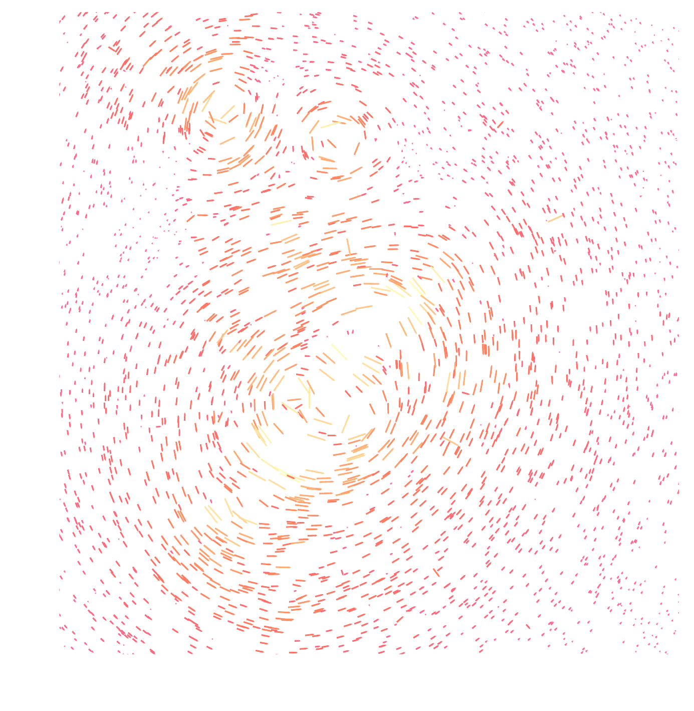
measured galaxy shapesthe data
→
reconstruct the matter mapstep 1
→
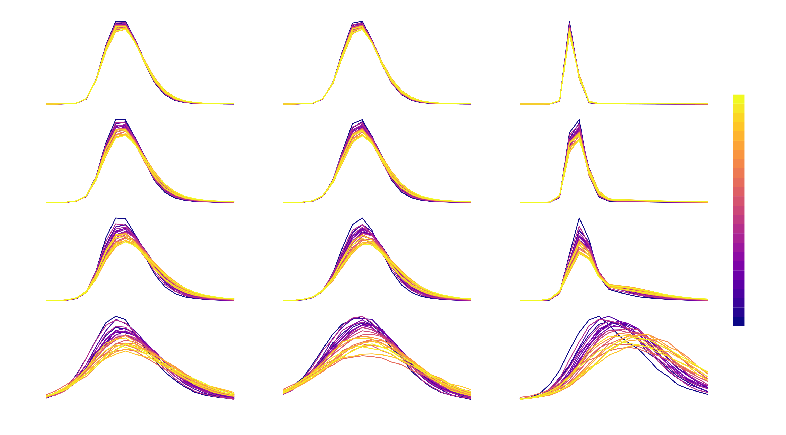
summarise it with a statisticstep 2
→
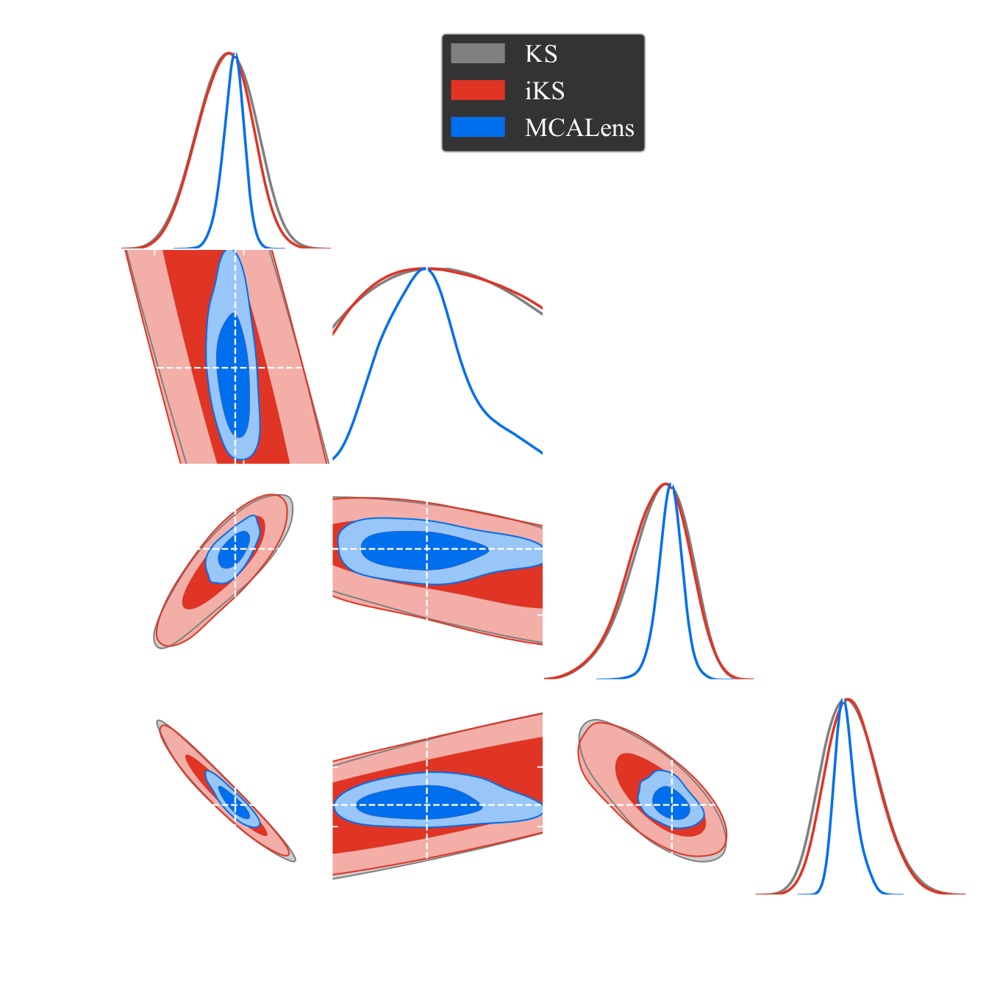
infer the parametersstep 3
Every one of those steps is now built out of learned components, and every one of them can
bias the answer, or quietly throw information away, with no internal check noticing.
The next two parts live in one step of that chain
Shear in, a mass map out. Everything in Parts 1 and 2 is about what happens
between those two boxes.
Part 1: Does the choice of mass-mapping method matter for cosmology?
A. Tersenov, L. Baumont, J.L. Starck, M. Kilbinger, arXiv:2501.06961
$\mathbf{n}$ — noise: a galaxy’s own shape is far bigger than the shear
$\mathbf{M}$ — gaps: the survey has holes, and no data means no constraint
$\mathbf{P}$ — a blind spot: shear cannot see a constant added to $\kappa$
Choosing one map means adding an assumption — and that
assumption is the method.
Kaiser–Squires assumes almost nothing
about κ — which is the problem
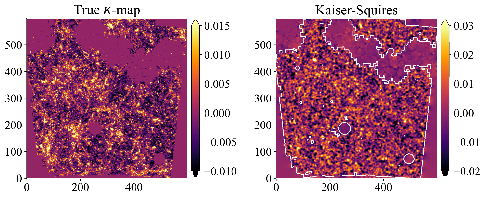
same field, same mask. Note the colour scales:the reconstruction spans twice
the range of the truth.
Why it is the standard
linear, no free parameters
one FFT — fast on any survey
exact on a complete, noiseless field
What it costs
amplifies shape noise at small scales
the mask leaks across the whole map
κ recovered only up to a constant
Every method solves the same optimisation
— they differ in one term
Find the $\kappa$ that stays consistent with the measured shear while remaining
physically plausible.
$$\hat{\kappa} \;\in\; \arg\min_{\kappa}\;
\underbrace{\tfrac{1}{2}\big\lVert \mathbf{P}\kappa - \gamma \big\rVert^{2}_{\mathbf{N}^{-1}}}_{\text{data fidelity: does it match the shear?}}
\;+\; \lambda\,
\underbrace{\mathcal{R}(\kappa)}_{\text{regulariser: is it a plausible map?}}$$
$\mathbf{N}$ — per‑pixel noise covariance
$\lambda$ — data against prior
first term identical for all — the difference is $\mathcal{R}$
$\mathcal{R}$ — what each method assumes a mass map looks like
1Kaiser–Squiresno $\mathcal{R}$ — invert, then smooth
2Wiener filteringa Gaussian field, known power spectrum
3sparse recoverymostly empty — a few strong wavelet coefficients
4MCALensboth — smooth background, sparse peaks on top
5deep learninglearn $\mathcal{R}$ from simulations
Kaiser & Squires 1993, Bobin et al. 2012, Lanusse et al. 2016,
Starck et al. 2021, Jeffrey et al. 2020, Remy et al. 2023
So write the assumption down
Bayes’ rule is bookkeeping for belief. What we should believe after seeing
the
data is fixed by two things:how well an answer explains what we saw, and what we assumed
before we looked.
what we believe, after
$p(\kappa \mid \gamma)$
the posterior — the map we report
∝
how well that explains the shear we measured
$p(\gamma \mid \kappa)$
the likelihood — physics we already have
×
what we assume, before we look
$p(\kappa)$
the prior
1Wiener filterκ is a Gaussian random field
2sparse recoveryκ is sparse in a wavelet basis
3MCALensκ is Gaussian plus non‑Gaussian
4deep learningstop choosing — learn it from simulations
The same three terms come back in Part 3 — with the cosmological parameters as the
unknown, and a likelihood we can no longer write down.
MCALens: two components, and a different rule
for each
$\kappa \;=$
$\kappa_{\rm G}$the Gaussian part
the smooth background. A Wiener filter, which needs only the power spectrum.
$+$
$\kappa_{\rm NG}$the non-Gaussian part
sparse in starlets — the peaks and haloes that carry the higher-order
signal.
Repeat until the map stops moving. Each half ends the same way —
with a proximal step.
what a proximal step does
$$\mathrm{prox}_{\lambda\mathcal{R}}(v) \;=\;
\arg\min_{u}\; \tfrac{1}{2}\lVert u - v \rVert^{2} \;+\; \lambda\,\mathcal{R}(u)$$
a data step lands at $v$ — better fit, not a plausible map
prox returns the nearest map the prior accepts
Different assumptions, different maps — and nobody
had checked whether it mattered
how the field compared them
How close the reconstruction lands to the truth — a reconstruction error,
computed in simulations, against a map no real survey ever has.
Every method reproduces the shear it was handed. What they differ in is what they
assume about everything the data leaves open.
the question nobody had asked
Does that difference survive into the posterior?
The map is an intermediate product. Nothing in a reconstruction error tells you what
happens to $\Omega_m$, $\sigma_8$ or $w_0$ — and the posterior is what we actually
publish.
The question was open, and actively argued: is a
state‑of‑the‑art
reconstruction worth building for a survey like Euclid — or is mass mapping just
preprocessing that any method does well enough?
A. Tersenov, L. Baumont, J.-L. Starck, M. Kilbinger —
arXiv:2501.06961
§1 Same simulations, same statistic, same
likelihood —
only the map changes
shear catalogue25
cosmologies, cosmo‑SLICS
reconstructionKS
/ iKS / MCALensthe only thing that
varies
wavelet peak countsstarlet, 2′–32′ + coarsewhich statistic,
and why → Part 3
emulator + MCMCΩm, σ8, h, w0how the inference works → Parts 3–4
One factor varies. Whatever moves in the posterior is the reconstruction
— not the simulations, not the statistic, not the sampler.
A map is $10^5$ correlated pixels, so it has to be compressed before any likelihood can touch
it — and that compression is a choice of its own. Part 3 is about which
statistic to compress with. Here it is deliberately held fixed, so it cannot be the
explanation for anything that moves.
§1 Kaiser–Squires smooths
the small scales away. MCALens does not.
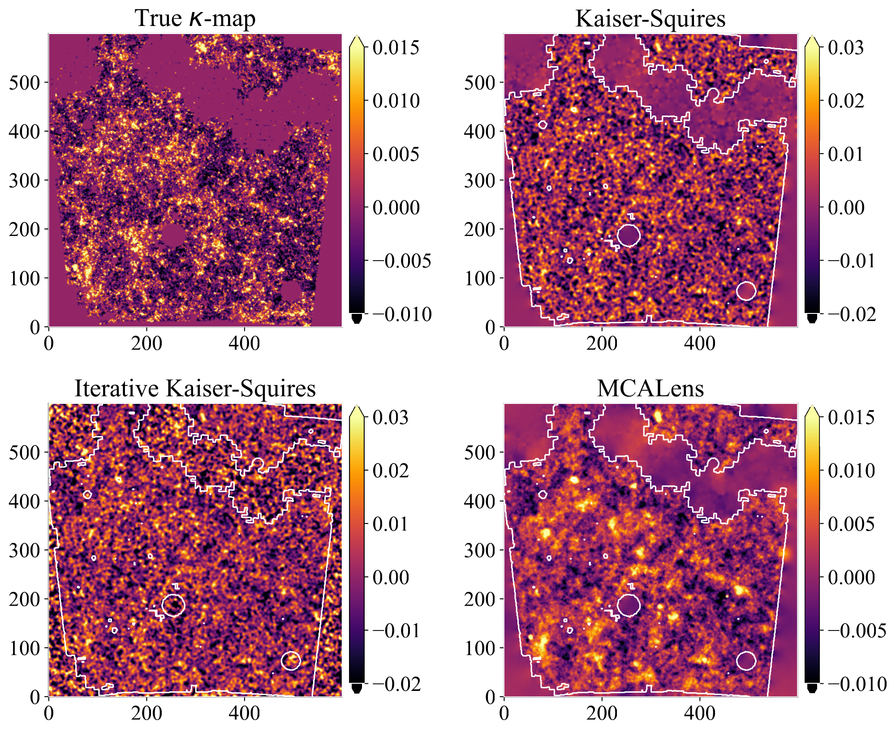
what each one assumes about $\kappa$
truthwhat we are trying to recover — and what no real survey
has
KSEuclid baselinenothing. Invert directly, then smooth to control the
noise
iKSEuclid baselinenothing — but fill the mask in first, by inpainting
MCALensstate of the arta Gaussian background plus a sparse non-Gaussian
component
Only MCALens is non-linear — only MCALens treats the structures
carrying the higher-order signal differently from the Gaussian background.
§1 Swapping the reconstruction alone moves the
figure of merit by 157 %
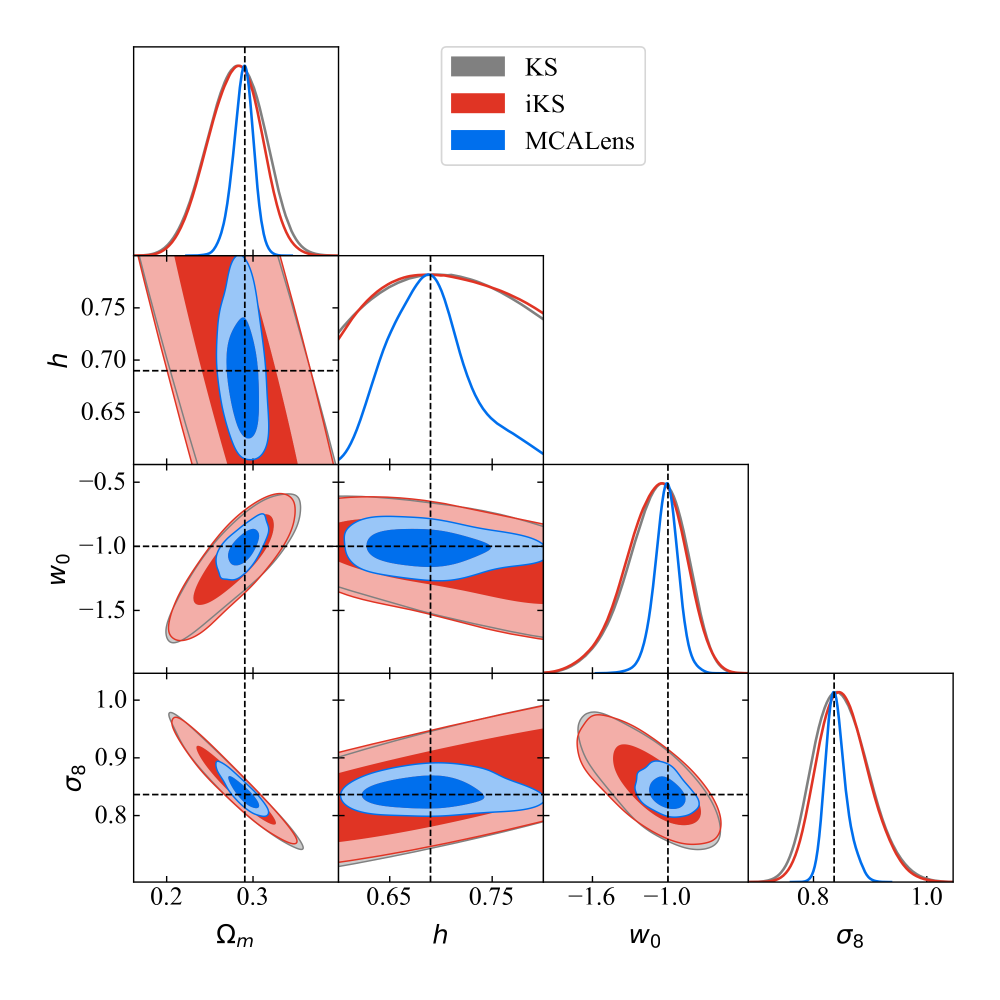
wavelet multi‑scale peak counts, Ωm, h, w0,
σ8
Kaiser–Squiresthe baseline
1.00×
inpainting KSa null result
1.00×
MCALensthe paper’s +157 %
2.6×
1.0 = Kaiser–Squires, four‑parameter figure of merit
map quality is not constraining power
MCALens reconstructs the field 4 % better in RMSE — and gives a
157 % better figure of merit.
Inpainting changes nothing here because the peak counts already exclude the masked
regions; the paper is explicit that this would not carry over to a Fourier‑space
statistic. Chapter 2 quotes no error bars — one chain per method.
§1 MCALens keeps gaining down to 2′,
where Kaiser–Squires has already saturated at 8′
Kaiser–Squires
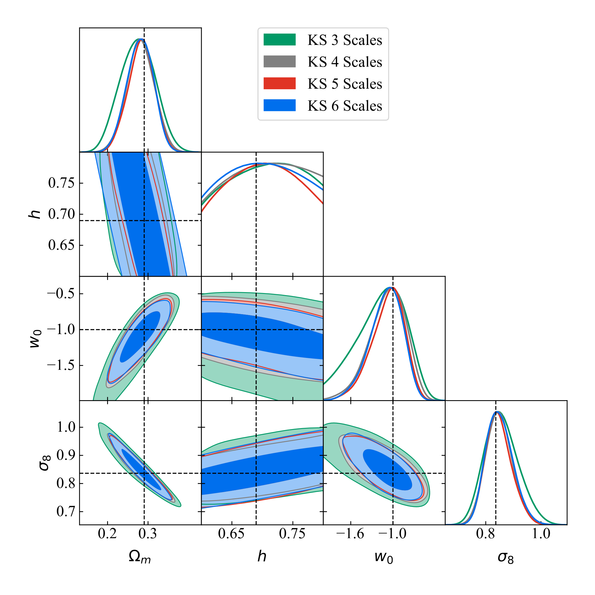
adding 4′ and 2′ changes nothing significantMCALens
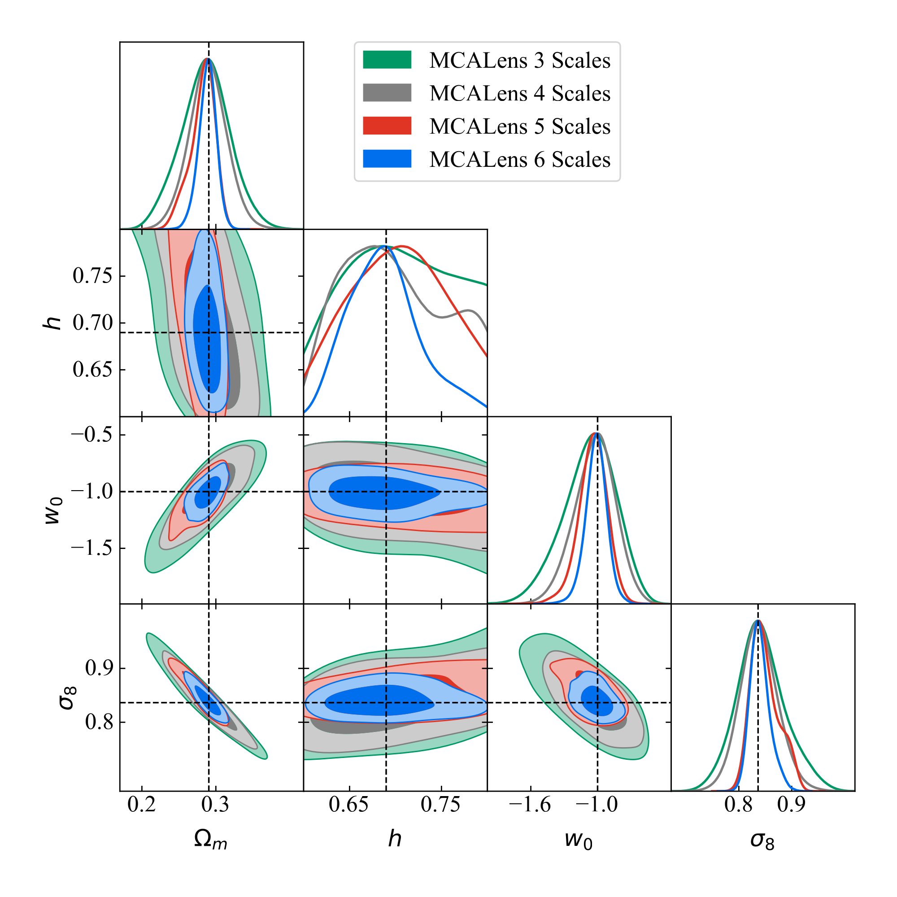
every added scale tightens the contours
the mechanism
The gain is not a global normalisation. It is small‑scale reconstruction fidelity
—
MCALens recovers structure where the linear inversion has already smoothed itself into noise, and
the higher‑order statistic can read it.
Part 2
A plug-and-play approach with fast uncertainty quantification for
weak lensing mass mapping
H. Leterme,
A. Tersenov,
J. Fadili, and J.-L. Starck
arXiv:2603.22006
Wait... what about Deep Learning for Mass Mapping?
Yep, people have tried it (with various approaches)! ...And it works!
However...
Mass mapping
method
Type
Accurate
Flexible
Fast rec.
Fast UQ
Iterative Wiener
Model-driven (Gaus. prior)
✗
✓
✓
✗
MCALens
Model-driven (Gaus. + sparse)
≈
✓
✗
✗
DeepMass
Data-driven (UNet)
✓
✗*
✓
✓
DeepPosterior
Data-driven (UNet + MCMC)
✓
✓
✗
✗
MMGAN
Data-driven (GAN)
✓
✗*
≈
≈
What we'd like
Data-driven
✓
✓
✓
✓
Deep Learning for Mass Mapping?
Mass mapping
method
Type
Accurate
Flexible
Fast rec.
Fast UQ
Iterative Wiener
Model-driven (Gaus. prior)
✗
✓
✓
✗
MCALens
Model-driven (Gaus. + sparse)
≈
✓
✗
✗
DeepMass
Data-driven (UNet)
✓
✗*
✓
✓
DeepPosterior
Data-driven (UNet + MCMC)
✓
✓
✗
✗
MMGAN
Data-driven (GAN)
✓
✗*
≈
≈
What we'd like
Data-driven
✓
✓
✓
✓
Plug-and-Play Mass Mapping
Main idea:
Use PnP framework: replace prox by an
on-the-shelf deep denoiser trained on simulations
Series converges towards a fixed
point $\hat{\kappa}$
If we choose $\mathbf{B} = \mathbf{A}^T \Sigma^{-1}$ → training
phase
independent of the noise covariance matrix
Instead of explicitly writing down a prior, we learn what a "likely" $\kappa$ looks
like
from simulations and enforce it through denoising.
PnPMass step by step
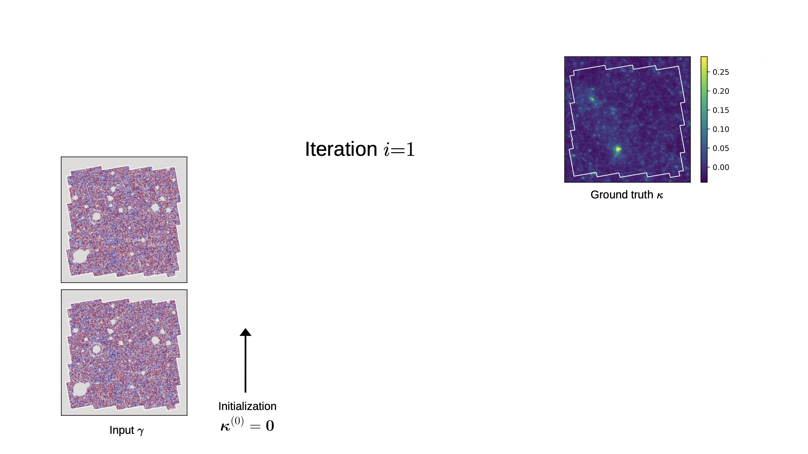
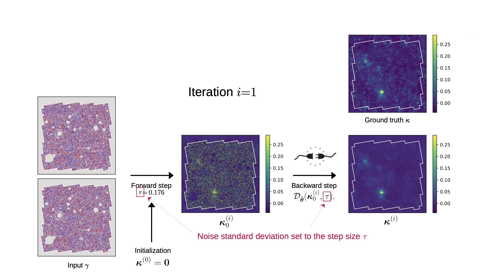
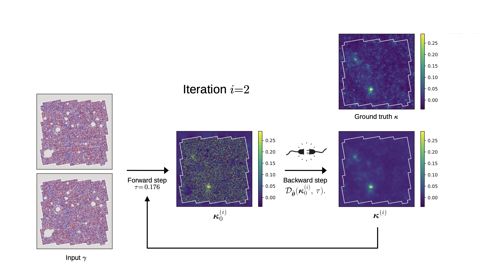
PnPMass on residuals
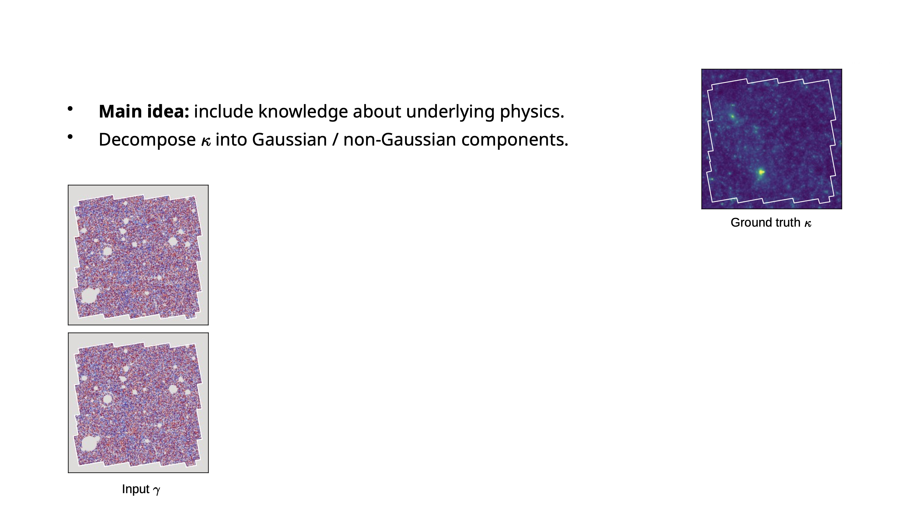
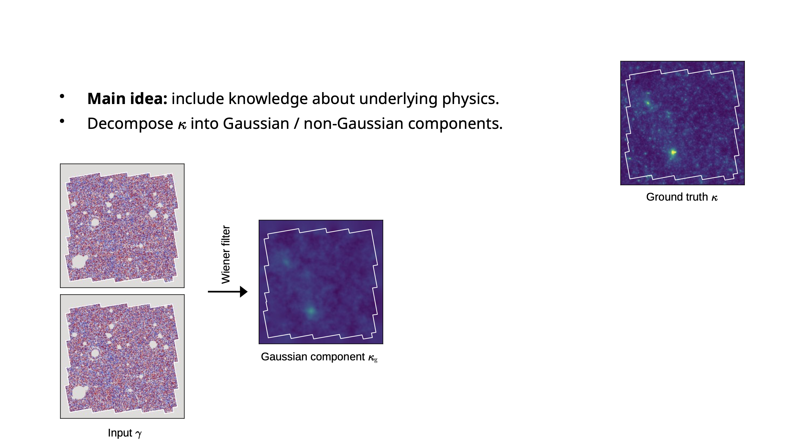
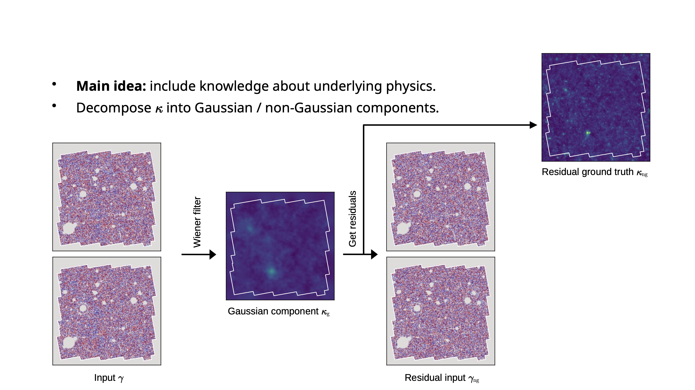
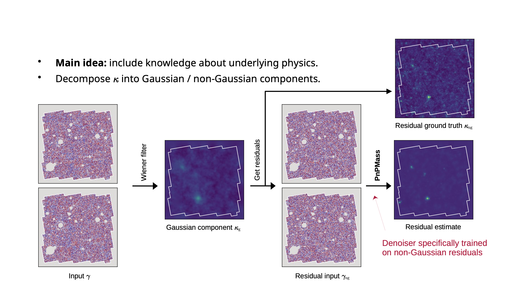
§2 Error bars from one
extra
forward pass — with a coverage guarantee on top
shear $\gamma$the
data
$\hat\kappa = F_{\Theta}(\gamma)$the PnPMass map
$\hat\sigma^{2} = G_{\Omega}(\gamma)$a second networkwhat this part
of the talk adds
calibrated intervalCQR, held‑out set
where the spread comes from
Noise and the mask leave the whole family of maps from Part 1, and the prior that picks
one of them is learned from simulations. The variance has to cover both.
first — predict the error
Train $G_{\Omega}$ on the squared residual of the reconstruction,
whose minimiser is the posterior variance, pixel by pixel. One forward pass,
no sampling.
then — make it honest
A network's own variance is not a guarantee.
Conformal quantile regression rescales it pixel by pixel against a
held‑out set, until the coverage is the coverage claimed.
Not “the network says $\pm\sigma$” — a stated coverage
level that holds whether or not the network is well specified.
How do we estimate uncertainties?
Step 1
We train a second neural network to estimate the posterior variance of
$\kappa$:
$$ \arg\min_{\Omega} \mathbb{E} \left[ \left\| G_{\Omega}(\gamma) - \big(\kappa -
F_{\Theta}(\gamma) \big)^2 \right\|^2_2 \right] $$
Trained on simulated pairs $(\kappa, \gamma)$, just like the denoiser — but now
focused on uncertainty.
This gives fast, pixel-wise error bars
Uncertainty estimation is fast — just one extra iteration after κ̂ is computed
→ adds almost no overhead
Step 2
Neural networks tend to produce miscalibrated uncertainties.
We apply conformal quantile regression (CQR) to adjust uncertainty intervals so they
have guaranteed statistical coverage.
CQR uses a held-out calibration set to compute a correction factor for each pixel.
Result: Reliable, data-driven uncertainty maps — with built-in coverage guarantees.
§2 As accurate as the fine‑tuned
networks, with the smallest calibrated bars — and no retraining
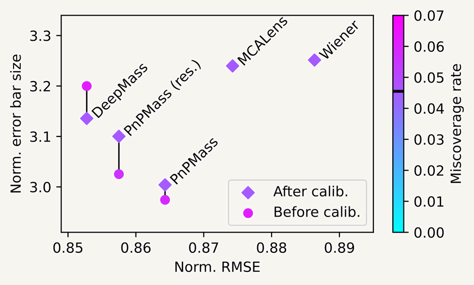
512 test maps, κTNG. Circles before calibration, diamonds after.
down and to the left is better — and after calibration everyone is
on target
accuracy: level with the deep‑learning methods
uncertainty: the smallest bars of any method, all 512 maps
deployability: any mask, any noise — at inference, not in training
the error bars know where the peaks
are
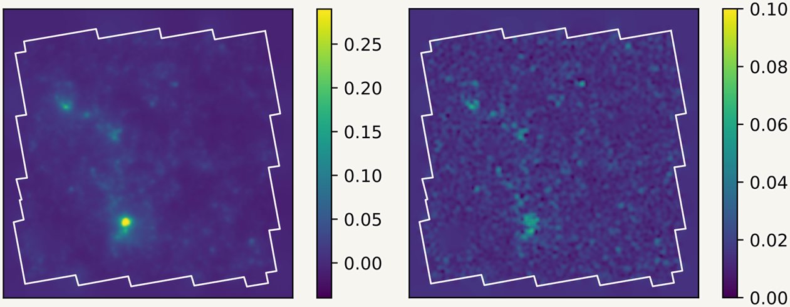
The map, and its calibrated σ on the same field.
DeepMass and MMGAN are retrained whenever the footprint or the noise changes. PnPMass is trained
once — which is what makes it runnable on a survey like Euclid.
Honest limits: coverage is marginal, not conditional — what escapes concentrates at
the peaks — and κTNG is a single cosmology.
Performance
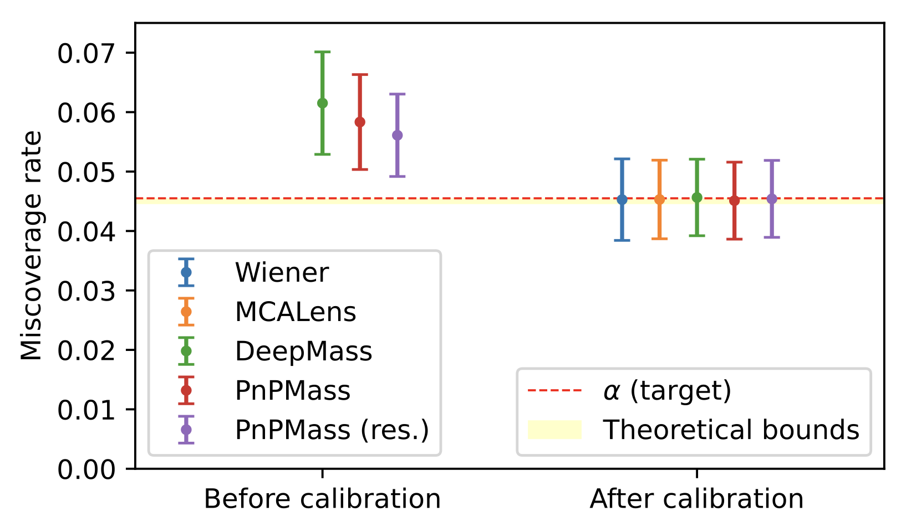
Work in progress: extending to tomographic mass mapping, and full 3D mass reconstruction.
Conclusions
Investigated how different mass mapping algorithms affect cosmological inference
using HOS from WL data.
Constructed new mass mapping algorithm based on the PnP formalism.
Results
With a state-of-the-art mass-mapping method (MCALens) we
managed to get
$\sim 157\%$ improvement in FoM over KS.
Increase in constraining power comes from the more accurate recovery of the smaller scales.
Wavelet Peak Counts: Provide tighter constraints than
single-scale peak counts.
PnP Mass Mapping:
Provides a fast, flexible, and accurate mass mapping
algorithm that can be used with any denoiser.
Provides fast and reliable
uncertainties using moment networks and conformal quantile regression.
Takeaway
Mass-mapping Matters: Choosing an advanced mass mapping method
significantly enhances constraints on cosmological parameters from HOS.
superseded — not part of the talk
LAM originals, Part 1
Replaced on 2026-09-03 by the restyled Act 1 slides. Kept for reference;
nothing is deleted.
why this buys flexibility
The denoiser never sees the mask, never sees the survey, never sees a map with one particular noise
level baked in. It learns one thing — what a plausible convergence field looks like.
The physics of the observation stays in the gradient step, where it belongs.
Swin‑Transformer denoiser, 7.2 M parameters, trained once on white Gaussian
noise
with the noise level as an input channel. Eight iterations per map.
§2 As accurate as a network retrained for the
observation
— with the smallest calibrated error bars of any method tested
the reconstruction with its per-pixel conformal bounds — a lower and an
upper map, not a single number
after calibration every method hits the same target rate…and PnPMass gets there with the smallest bars
accuracy
Within 1 % of DeepMass in RMSE — and DeepMass was retrained for this mask and this
noise. The residual variant: within 0.5 %.
the axis that matters
Conformal calibration makes every method reach the target coverage. So the comparison
is which method gets there with the tightest intervals — PnPMass, on
all 512 test images.
Coverage is marginal, not conditional — the miscoverage concentrates
at the peaks, exactly where Chapter 2 says the information lives. And this is a
single cosmology.
movement II — the summaries
Everything so far was one box of the chain
Parts 3 and 4 are about the next two: which statistic we compress the map with,
and whether the answer survives the systematics.
Same chain, one step to the right
A map is $10^5$ correlated pixels, so it has to be compressed before any likelihood can
touch it — and which statistic you compress with decides how much of the information
survives.
Parts 3 and 4 live in this one step — a map goes in, a summary comes out.
In Part 1 it was nailed down on purpose. Now it is the subject.
The two‑point function is the field's baseline
— and for a Gaussian field it is everything
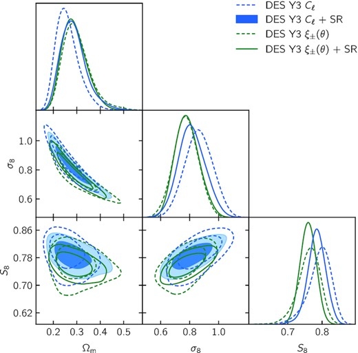
DES Y3 cosmic shear, two‑point functions only — harmonic
($C_\ell$) and real space ($\xi_\pm$)
what it measures
How correlated the shear is between pairs of galaxies separated by an angle
$\theta$. Measured as $\xi_\pm(\theta)$, or as $C_\ell$.
every flagship result — KiDS‑1000, DES Y3, HSC Y3
— is a two‑point analysis
predicted analytically; its covariance is understood
two decades of systematics work built around it
A Gaussian random field is its power spectrum — nothing else to know. So the
question is not whether the two‑point function is good.
It is whether the late‑time field is Gaussian.
Traditional approach: the 2-point route
KiDS-1000 cosmic shear constraints using 2-point functions only
(Asgari et al. 2022)
Concept
Measure galaxy ellipticities \( \epsilon \) .
Compute the 2-pt functions.
Run MCMC with an analytic likelihood to recover posteriors:
a two‑point measurement keeps the amplitudes and throws the phases away
everything that makes the web a web — filaments, haloes, voids — lives there
to reach it you need statistics beyond 2‑pt: peaks, wavelets, the
ℓ1‑norm, Minkowski functionals
On the same maps, peaks beat the power spectrum — and
multi‑scale peaks beat single‑scale
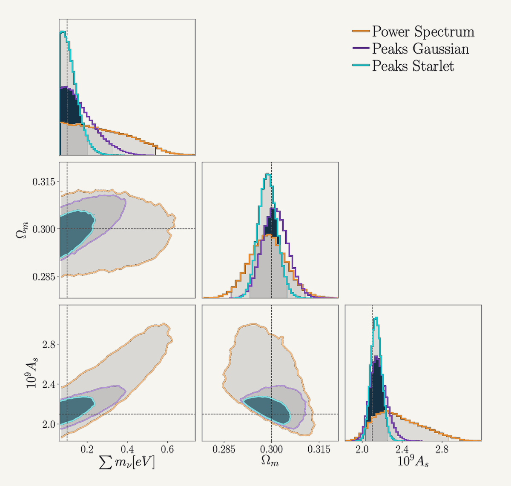
Forecast contours from the same convergence maps: the power spectrum, peak
counts after a single Gaussian filter, and peak counts on a starlet decomposition.
Nothing about the data changed. The only thing that moves these contours is the
choice of summary statistic.
Indeed, HOS can tighten constraints significantly
Peak funtions
The peak function is the number
of
peaks in a map as a function of the SNR $\nu$
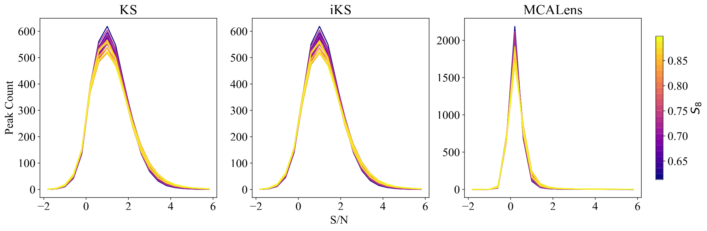
Peak counts: the maxima of the
signal‑to‑noise field
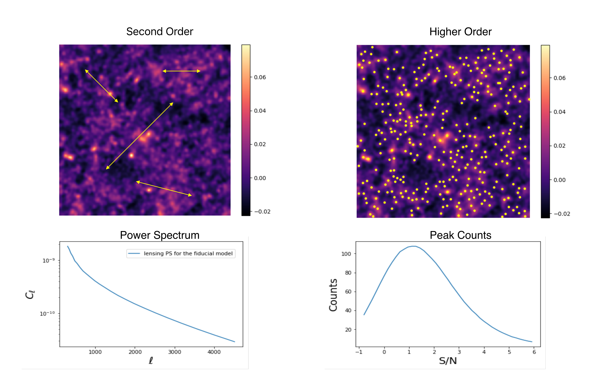
A peak is a local maximum of
$\nu = \dfrac{\left(\mathcal{W} \ast \kappa\right)(\theta_{\rm ker})}{\sigma_n^{\rm
filt}}$
— the map smoothed by a filter, in units of the noise.
peaks sit where $\kappa$ is high, so they trace massive structures
counting them by height is a one‑point statistic that sees what the
power spectrum cannot
Higher Order Statistics:Peak Counts
Peaks: local maxima of the SNR field $\nu =
\dfrac{\left(\mathcal{W} \ast \kappa \right)(\theta_{\rm ker})}{\sigma_n^{\rm
filt}}$
Peaks trace regions where the value of $\kappa$ is high →
they are associated to
massive structures
One starlet transform, peaks at every scale
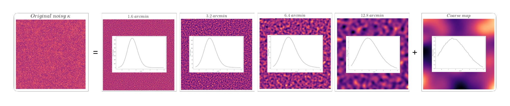
The starlet transform writes a map as a sum of band‑pass images, each carrying
structure of one characteristic angular size, plus a coarse map.
counting peaks band by band is a multi‑scale analysis, where a single filter
size is not
all the scales are processed at once, from one transform
the bands cover different frequency ranges, so the peak‑count covariance comes out
almost diagonal
Wavelet peaks
We consider a multi-scale analysis compared to
a
single-scale analysis
Apply a starlet
transform → allows us to
represent an image $I$ as a sum of wavelet coefficient images and a coarse resolution image
Allows for the simultaneous processing of data at different scales
→
efficiency
Each wavelet band covers a different frequency range, which leads to an almost diagonal peak count covariance matrix
Wavelet peak funtions
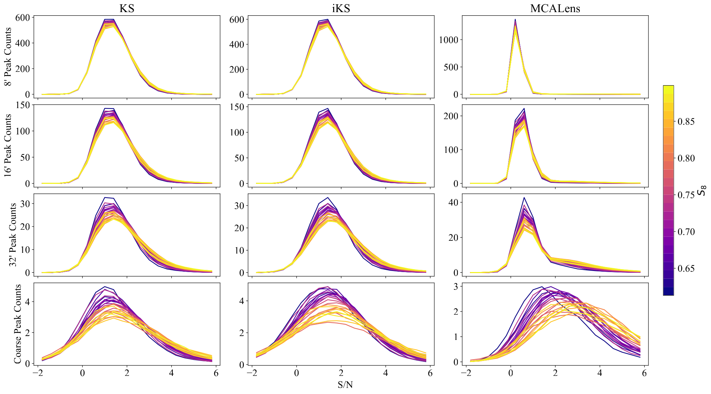
The starlet $\ell_1$‑norm reads every
pixel,
not just the maxima
Use $\texttt{cosmoSLICS}$ simulations: suite
designed for the analysis of WL data beyond the standard 2pt cosmic shear
$\texttt{cosmoSLICS}$ cover a wide parameter
space in
$\left[ \Omega_m, \sigma_8,
w_0, h \right]$.
For Bayesian inference → use a Gaussian
likelihood for a cosmology independent covariance, and a flat
prior.
To have a prediction of each HOS given a new set of
parameters→ employ
an interpolation with Gaussian Process Regressor (GPR)
Noise & Covariance
We consider Gaussian, but non-white noise → the
noise depends on the number of galaxies in each pixel $$\sigma_n =
\dfrac{\sigma_{\epsilon}}{\sqrt{2 n_{\rm gal} A_{\rm pix}}}$$
$\mu$: expected theoretical prediction, $d$:
data array (mean over realizations of a HOS), $C$: covariance
matrix
Summary statistics
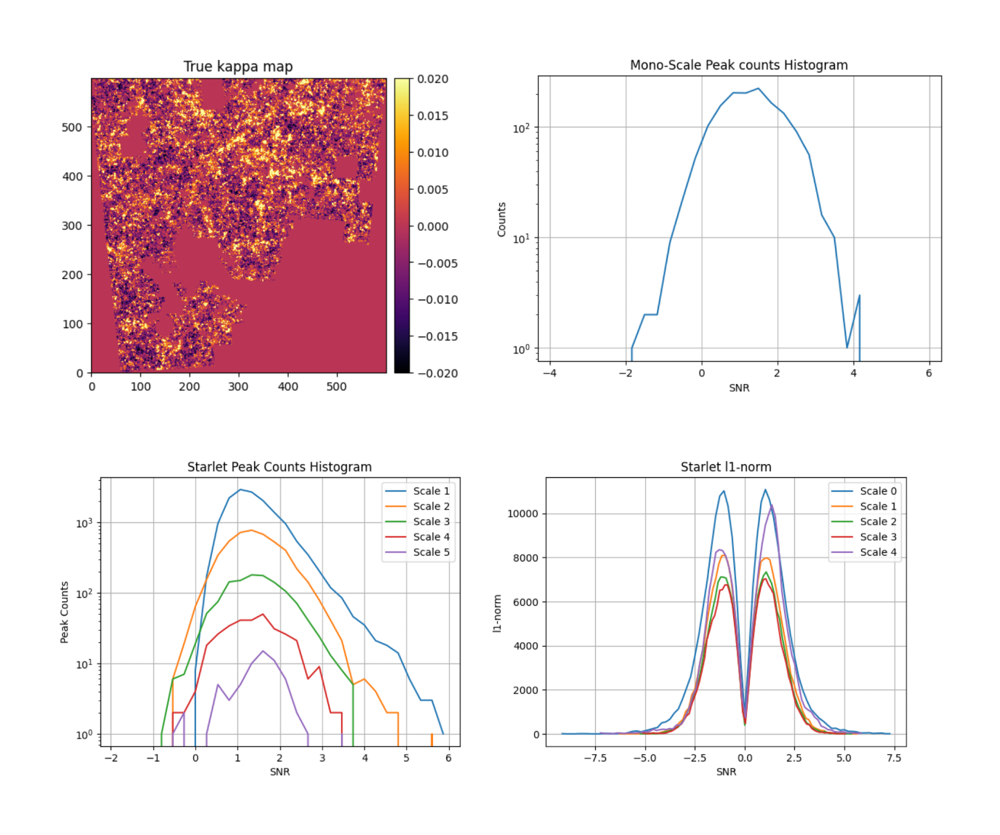
Key concept: wavelets
Fourier tells you which scales are there. A wavelet tells you which
— and where.
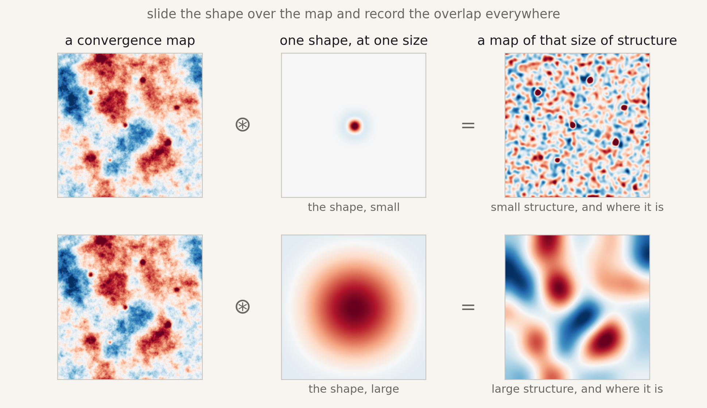
one shape, stretched and slid — the value at each point asks how much structure of
this size is here
do it at every size: one map in, a stack of maps out, and nothing is
lost — $\kappa = \sum_j w_j + c_J$
the power spectrum hands back a
curve. This hands back an image per scale — so we can do
statistics on its pixels
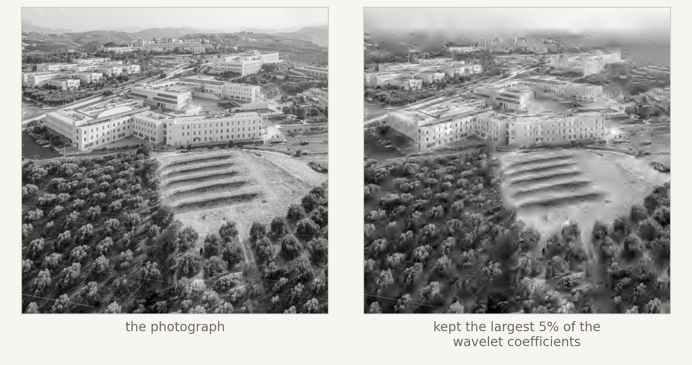
Throw away 95% of the coefficients and the picture survives.
Localised structure is sparse in this basis — that is JPEG 2000,
and it is why thresholding the small coefficients denoises.
University of Crete campus, CDF 5/3 — the wavelet of JPEG 2000
Wavelet peak counts and
the $\ell_1$-norm are 1-pt statistics on the same starlet decomposition
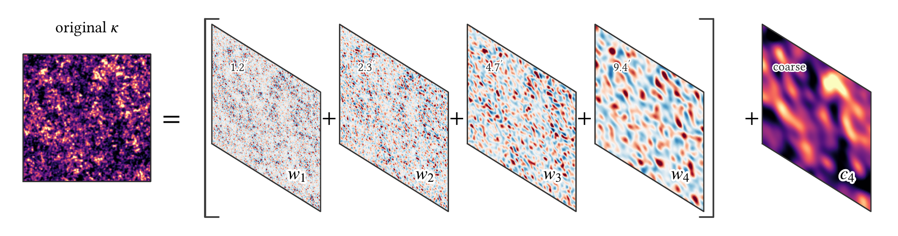
the starlet transform: one map as a sum of band-pass images, each carrying
structure of a characteristic angular size
wavelet peak counts
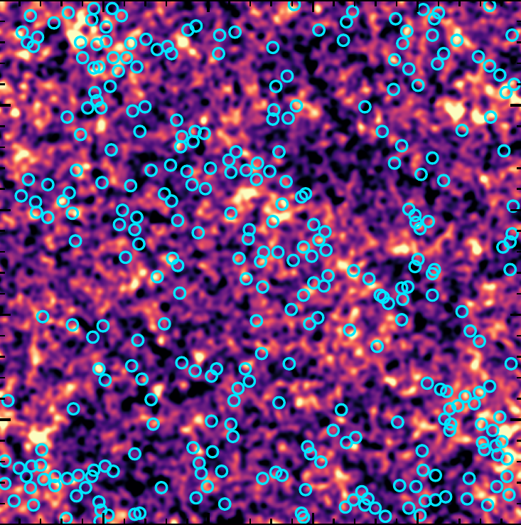
local maxima of the SNR field, counted per SNR bin → focus only on a subset
of the field
$\mathcal{S}_{j,i}$ — the coefficients of scale $j$ whose SNR
falls in bin $i$
sum of absolute coefficients per band and SNR bin → encodes
information from every pixel (peaks, voids, ...)
And then the summary has to become a posterior
For the power spectrum there is a likelihood you can write down. For peaks, for the
ℓ1‑norm, for anything a network computes, there is not.
So the comparison runs against simulations — the whole bottom row of the
chain. That is what makes this simulation‑based inference.
The classical route rests on a likelihood you can
write down
Bayes’ rule is bookkeeping for belief. What we should believe about the cosmology
after seeing the data is fixed by how well a set of parameters explains what we measured,
and by what we assumed before we looked.
what we believe, after
$p(\theta \mid d)$
the posterior — the contours we publish
∝
how well those parameters explain the data we measured
$p(d \mid \theta)$
the likelihood
×
what we assume, before we look
$p(\theta)$
the prior — ranges on the parameters
All the work is in the middle term, and classically we assume it is Gaussian:
Then sample it — MCMC walks the parameter space and returns the posterior.
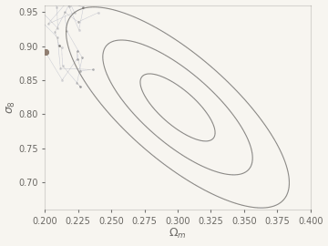
Key concept: generative modelling
Learn the distribution a training set was drawn from — when all you ever
see is the samples.
$\mathbb{P}$ is never handed to us. We get $X = \{x_0, x_1, \ldots, x_n\}$ and fit a
parametric $\mathbb{P}_\theta$ meant to sit close to it
once trained, you can sample from $\mathbb{P}_\theta$ — and, for
some models, evaluate the density $p_\theta(x)$
it is indifferent to what $x$ is, which
is why the same machinery is behind the models everyone has been hearing about —
faces, images, video, molecules
Generated faces, 2014 to 2017. The same idea — learn
$\mathbb{P}_\theta$, then sample it.
figure from Boesel & Marks, Image Generation Models: A Technical
History, arXiv:2603.07455
A normalizing flow: a simple distribution pushed through an
invertible map
Start from a unit Gaussian and learn an invertible map onto the distribution you
want. The density comes along by change of variables:
each layer has a triangular Jacobian, so the determinant is a product down the
diagonal — cheap enough to train on
the result is flexible, you can sample it, and you can evaluate
its density — all three at once
the samples, carried along
Condition every layer on some data $x$ and it becomes $q_\phi(\theta \mid x)$ —
a posterior you can fit, by maximum likelihood.
Simulation‑based inference: replace the
likelihood with the simulator
We cannot write $p(x \mid \theta)$ down — but we can draw from
it. So stop evaluating a likelihood and learn the posterior instead.
The cost is all in stage 1, and it is paid once: the trained
flow answers any new observation immediately. That is what amortised
means — and it is what makes coverage testing affordable.
Looking for the perfect summary statistic
κ maps→
?
summary→cosmology
Beating the power spectrum is a low bar — how much
is actually there to get?
A neural compressor trained to be
information-optimal
each cell holds the ℓ1
weight of the pixels landing in it
A cross-map collapses each pair into one
field before the statistic is taken. The joint ℓ1-norm keeps the whole plane,
and needs no new map at all.
§3 Read the bins jointly and the analytical
ℓ1-norm reaches the optimal CNN
The tie holds on every parameter, over 9,000 mock
observations.
The non-Gaussian information and the worst small-scale systematic live on the same scales
To be able to trust our HOS results we must investigate how
they are affected by each systematic at the contour level.
question 1
How much does unmodelled feedback bias our higher-order
statistics, and how does that grow with survey area?
question 2
Once those scales are cut, is there any constraining power left to gain
over the power spectrum?
The same pipeline — and the wavelet keeps the scales
separate
+ noise wavelet
transform
condition
Gaussian\(\mathcal{N}(0,\mathbf{1})\)
Density estimatorconditional MAF
Posterior\(p(\theta\mid x)\)
training objective
\(\mathcal{L}=-\log p_\phi(\theta\mid x)\)
§4 Baryonic Bias Scales with Survey Area
At 14,000 deg² (Stage IV): $C_\ell$ shows 2.2σ, peaks and the $\ell_1$-norm 3.6σ
At full sky: $C_\ell$ reaches $\sim3.5\sigma$, both HOS exceed 6σ
HOS show higher bias than $C_\ell$: more sensitive to the
baryonically-contaminated small scales
measured at full map resolution: $\ell_{\rm
max}=1024$ for $C_\ell$, all four wavelet bands for the HOS
Tersenov+ 2026, A&A
§4 Buying back an unbiased inference costs
$C_\ell$ most of its multipole range, and the starlet its finest band
Criterion: bring the baryonic bias below 0.3$\sigma$
$C_\ell$ takes a sliding
cut, tuned to what is safe at each area: $\ell_{\rm max} = 860$ at 2,000 deg² falling to 340 at full sky
The starlet concentrates the contamination in
its finest band, so dropping $j=1$ suffices at every area
$C_\ell$→a cut
tuned to each area
starlet→whole
bands only, so we cut more than we need
§4 Are HOS still useful?
on baryon‑safe scales
starlet $\ell_1$‑norm: ×1.8 tighter than $C_\ell$ at
Stage IV, ×2.6 at full sky
different degeneracy directions in the $w_0$ planes, so the HOS stay
complementary to $C_\ell$
and this is a floor
the signal survives on quasi‑linear scales — these are not only
deep‑non‑linear probes
our whole‑band cut is not optimised, and better baryon modelling pushes
the analysis deeper, where the gain is larger
§4 Nulling promises localized scale cuts... For HOS it inflates the contours instead
the promise
broad, overlapping↓nulled, localized
A fixed angular scale stops mixing redshifts, so the cut can go only where the systematic
is
the problem
blue = the ℓ1-norm in the nulled basis
BNT = a fixed, invertible transform → nothing can have
been lost...
Tersenov+ 2026, A&A and Tersenov+, in prep.
§4 The information is recoverable by the summary
that reads the bins jointly
figure of merit retained under the nulling
one bin at a timeℓ1, auto-maps
0.16×
+ one derived field per pairℓ1 + product
cross-maps
0.24×
each pair's full 2-D distributionjoint
ℓ1-norm
0.72×
all four channels at onceCNN, VMIM-trained
~1×
Same four summaries as before. In the standard
frame they spanned 38%; here, a factor of six.
nulled frame over standard
dashed = the nulled frame
So nulling can be kept as a mitigation at
no cost in constraining power, provided some stage of the pipeline reads the bins jointly.
And the power spectrum was this ladder's first rung all along.
Four questions about that chain
question 1 — the maps
Is mass mapping preprocessing, or does the choice of reconstruction
change the cosmology we infer?
question 2 — the maps
Can a reconstruction be flexible, fast, accurate and honest about its own
uncertainty at the same time?
question 3 — the summaries
Do we need a neural network to read the maps, or can a hand-built
statistic reach the same ceiling?
question 4 — the summaries
If we discard every scale unmodelled baryons measurably touch, is there
non-Gaussian information left worth having?
Two about the maps, two about the summaries. Each pair asks whether
there is something to gain, then whether we can actually have it.
Conclusions
Q1Do we need deep learning to extract the non-Gaussian information?✓No. Read the bins jointly and
a fixed wavelet statistic matches the optimal compressor, with no
training.
Q2Does baryonic feedback put it out of reach?✓No. Cut every contaminated
scale and the ℓ1-norm is still ×1.8 tighter at Stage IV, ×2.6 at full
sky.
Q3Can redshift nulling then be used with higher-order statistics?✓Yes, provided the summary
reads the bins jointly. There is no loss of information, and the inflation is a frame
artifact.
What is left: the genuinely three- and four-bin structure a pairwise statistic
cannot reach.
The joint wavelet ℓ1-norm matches neural compression for tomographic weak-lensing
inference
Tersenov, Starck & Kilbinger — in preparation Mitigating baryonic effects in weak lensing with higher-order statistics
Tersenov, Guerrini, Starck & Kilbinger — A&A, in press
both on arXiv in September
for questions
Backup
Calibration, the completeness ladder, the nulled-frame companions, and the maps.
Q2 With no feedback model at
all, cutting every contaminated scale still leaves the ℓ1-norm ahead of the power
spectrum
figure of merit relative to the power spectrum, on each
statistic's own baryon-safe scales
A floor: no feedback model, every contaminated scale
discarded.
Q1 Build joint reading in, and a fixed wavelet
statistic reaches the ceiling
three-parameter figure of merit, matched pipeline
one bin at a timeℓ1, auto-maps
2448
+ a derived field per pairℓ1 + product
cross-maps
3045
each pair's full 2-D distributionjoint ℓ1-norm,
new
3371
all four channels at onceCNN, VMIM-trained
3326
↑ the ceiling, a compressor trained to be optimal
a tie on every parameter, over 9,000 mock observations — not a figure-of-merit
artefact
Q1 Given the same constraining power, everything
else decides
constraining powerjoint ℓ1-norm 3371 ≈ CNN
3326
fixed — the ℓ1-norm
Fixed before any simulation is seen
No training, nothing to overtrain
Survives a change of survey or forward model
Open to inspection, scale by scale
Analytically predictable on large scales
learned — the compressor
Retrained for every change of configuration
Seed-to-seed scatter
Ten coordinates with no meaning to inspect
Cannot tell physics from simulator artefacts
The compressor keeps one advantage: it reads the bins jointly for
free. Which matters next.
backup We are all optimizing statistics; the
two-point camp still does not trust the contours
🧐
the 2-point camp
"I don't believe any of your contours."
what would make HOS flagship-grade?
blinding
robust covariance
emulators
systematics
analytical cross-checks
non-Gaussian likelihood
method limits
null / validation tests
simplicity
Part 1 of 2
Do baryons break HOS?
Baryonic feedback, the wavelet ℓ1-norm, and the BNT transform.
§4 Stage IV is no longer statistics-limited, it
is systematics-limited
to trust a statistic
Before we trust any summary statistic, we have to quantify how each systematic affects it, and
at the contour level (the inferred parameters).
Illustris: baryonic feedback reshaping the cosmic web
the systematic at hand
Baryonic feedback (AGN, supernovae) suppresses matter on small
scales, mimicking cosmological signal and biasing inference, exactly where the
constraining power lives and where the feedback models disagree most.
core questions
How does unmodeled baryonic feedback bias our non-Gaussian
statistics?
After safe scale cuts, do HOS still outperform the power
spectrum?
Part 2 of 2
Learned vs analytical, and can we trust it?
The analytical ℓ1-norm vs a learned CNN, calibration, and the answer to the
BNT puzzle.
§3 Part 2: learned summaries, and the BNT
cliffhanger
the question
How much better are "optimal", learned summaries than our hand-built summary statistics?
what is a learned summary?
A neural network that compresses the κ map directly into a few numbers, instead of
a hand-designed statistic
Trained with VMIM to keep the cosmological information: the
"optimal learned compressor"
and, left over from Part 1
...and what the hell is going on with BNT?
and these largely escape TARP and SBC: the contours look calibrated and are still
wrong
the thumb on the scale
ℓ1 is simple, interpretable, inspectable; CNNs are powerful but treacherous
Where the CNN earns its keep: BNT, the channel-mixing win
So the question is not whether the network wins, but what the cost and the risk are buying
backup Do baryons break HOS? No.
Part 1, baryons
Usable non-Gaussian information persists on baryon-safe scales (the ℓ1-norm
beats P(k) ×1.8 at Stage IV, ×2.6 at full sky), cleaned by a single scale cut.
Part 2, learned vs analytical
Read the bins jointly and the hand-built ℓ1-norm matches the optimal learned
summary — 3371 against 3326, a tie, both calibrated.
BNT
The apparent BNT break is a frame artifact: what survives tracks how jointly
the summary reads the bins — 0.16, 0.24, 0.72, 0.96.
the bigger question
And can we trust higher-order weak lensing? Getting there...
§4 You can see it in the maps: BNT trades deep
signal for amplified, correlated noise
before BNTafter BNT: the SNR collapses
§4 The same maps, noiseless: BNT cleanly
redistributes the signal
before BNT (noiseless)after BNT (noiseless)
Without shape noise, BNT is a clean, invertible redistribution of the signal (the deep
common mode becomes one shallow map plus thin slices). The contour inflation comes from the
correlated noise it introduces, not from any lost signal.
§3 Where the cross-bin information lives: the
κiκj product buys +24%, and reading each pair
jointly buys the rest
add the cross-bin physics carefully
Product κiκj (= ξij): +24% over
auto-only
A convolution buys +9%, and is sensitive to the training realisation
2448 → 2671 → 3045 → 3255, and the joint ℓ1 closes it at 3371
A full-sphere cross construction inflates this, but its channels carry
12–20% of their variance at ℓ < 18 against 0.4–1% for
the autos. That is leakage. We use only the physically buildable flat-sky arms.
§4 The clincher: a frame artifact, not lost
information (one rotation recovers ℓ1, 1.06×) unpublished — not in Paper II
the information was never lost
One fixed whitening rotation Q recovers the full no-BNT FoM3 for ℓ1 too (1.06×)
The collapse is a per-channel frame artifact: mix the bins, or re-rotate once
Confirms the intuition block; closes the Vinciguerra loop
Closes the Vinciguerra loop: their forecast said recovering the BNT SNR for HOS is
"highly non-trivial"; here it is, in one fixed rotation. A frames result: a one-point statistic's
information content is basis-dependent, and BNT is simply a poor frame for a per-channel statistic.
backup One story: the optimal tomographic
strategy (BNT becomes viable once the summary mixes bins)
problem: the per-bin ℓ1 inflates under BNT→resolution: a summary that reads the bins jointly is unaffected
one escalating story about cross-bin information
P(k) → ℓ1 (much more, even
on safe scales) → learned (a
tie, both calibrated)
Per-bin statistics cannot access cross-bin info (break under BNT); a channel-mixing
compressor can (BNT-lossless)
BNT becomes viable once the summary mixes bins
Forward-looking: a route to baryon-robust, non-Gaussian SBI that keeps BNT's
clean per-bin scale cuts without the contour-inflation tax. A next step, not a finished end-to-end
measurement.
backup Constraining power against survey area,
all three statistics
On baryon-safe scales. Fitted slopes: power spectrum $+1.24$, peaks $+1.37$,
$\ell_1$-norm $+1.34$, against the ideal $A^{+3/2}$.
backup The starlet band responses in multipole
This is what "drop $j=1$" removes: the highest-frequency band, everything above $\ell
\approx 500$. The other bands are untouched, at every survey area.
backup BNT on the power spectrum: the
bin-specific cut is worth ×1.4
Baryon sensitivity localises to the first transformed bin, so the cut goes there alone
and bins 2–4 keep $\ell_{\rm max} \approx 1024$: 92 of 120 bandpowers retained against
50 for the global cut. σ(Ωm) −14%, σ(σ8)
−19%.
backup Baryonic suppression of the tomographic
power spectra
Reaches ≈1.5% by $\ell \approx 1000$. The apparent "high-z bins are worse"
ordering is a noise artefact — the noise power dominates the denominator at low z. On
noiseless maps the ordering inverts to the physically expected one.
backup Baryonic response of the ℓ1-norm,
scale by scale
Concentrated in the positive SNR tail, and vanishing in the noise-dominated
bulk ($|\nu| \lesssim 2.5$) — which is why an SNR-space cut is available to higher-order
statistics and not to the power spectrum. Left to future work in the paper.
backup Coverage in the nulled frame: every arm
still passes
The collapse is calibrated. The wide contours are an honest report of a real
loss in that representation, not over-confidence — which is what makes the retention ladder a
statement about information rather than about a broken fit.
backup Where the ℓ1-norm’s
constraining power sits
Intermediate scales ($j = 2$–3, tens of arcminutes) and moderate
signal-to-noise ($|\nu| \approx 1$–2) — mildly non-linear structure, not the rare
extreme peaks. Dovetails with Paper I: drop $j=1$ and you keep most of it.
backup The ℓ1-norm across cosmologies
Coloured by $\sigma_8$. The statistic responds smoothly and monotonically across the
prior — no training, no emulator, and the dependence is visible by eye.
backup The data: flat-sky tomographic patches
10°×10° gnomonic patches, 80×80 px (7.5′/px), $|b| <
75^{\circ}$. 180 patches per realisation × 50 noise realisations = 9,000 mock
observations. Patch size chosen at 10° because gnomonic corner distortion falls from
6.3% at 20° to 1.5% at 10°.
backup The tie, per mock rather than at the
median
σ(Ωm), σ(σ8), σ(w0) and
FoM3 across 9,000 mocks — medians 3045, 3371, 3326
The answer to “FoM3 is fragile in a degenerate parameter
space”: the marginals are quoted alongside it, and this is the population rather than a point.
The ± on the medians is the spread over three independently trained compressors, the dominant
source of run-to-run variability.
§4 The channel-mixing CNN does not notice the
transform at all (0.96×)
same maps, same transform, no cost
Feeding the network the nulled maps gives the same first layer with kernels KB, so
“undo the nulling” is one configuration of the first layer — available before any
non-linearity, at no capacity cost. The 4% shortfall is an optimisation residual, not lost
information.
source material — not part of the talk
Lensing pedagogy and mass-mapping methods
21 slides lifted unchanged from LAM 2026, for Act 0 and the Ch2 backup
library.
$\,$Introduction -
Weak
Lensing$\,$
WL = Observational technique in cosmology for studying the
matter
distribution in the universe
Principle:
deflection of light from distant galaxies by gravitational fields → causes
image
distortion
Weak → subtle & coherent distortions of background
galaxy
shapes
WL provides a direct measurement of the
gravitational
distortion.
WL enables us to probe the cosmic
structure,
investigate the nature of dark matter,
and
constrain cosmological parameters.
Encodes both geometry (via \( \chi, a(\chi)
\)) and growth (via \(
\delta
\)).
Simulated \( \kappa(\boldsymbol{\theta}) \) map.
From galaxies to mass maps
Inpainting
Inpainting methods → techniques to fill in missing data in images by
estimating the missing values from the known ones.
A way to deal with the missing data problem in mass mapping and
with the border effects in the convergence field.
Implement a sparse inpainting based on the DCT (assume that
the full $\kappa$-field is sparse in the DCT dictionary → apply an iterative thresholding
algorithm to recover the missing data).
Wiener filter
Assumes prior on $\kappa$ → Gaussian random
field $p_{\rm Gauss}(\kappa) = \frac{1}{\sqrt{\det 2\pi \mathbf{S}}} \exp{\left( -
\frac12 \tilde{\kappa}^{\dagger} \mathbf{S}^{-1} \tilde{\kappa} \right)}$
The Gaussian prior encodes the assumption that the fluctuations in
the
$\kappa$-field are well described by a Gaussian random field, with power
spectrum given by the cosmological model
Convergence power spectrum
$$ \langle \tilde{\kappa}(\boldsymbol{k}) \tilde{\kappa}^*(\boldsymbol{k}') \rangle =
(2\pi)^2
\delta_D(\boldsymbol{k} - \boldsymbol{k}') P_{\kappa}(k) $$
Stat. measure of the spatial distribution of the convergence field → quantifies the
amplitude of the fluctuations in κ as function of their spatial scale
This solution corresponds to the maximum a posteriori (MAP) solution
under
the assumption of a Gaussian prior on $\kappa$, and it matches the mean
of
the Gaussian posterior.
The annotated cone, the field equation, the standalone tension slide, and the
parameters-and-probes pair. Kept for comparison.
It was the third one
Whether a tension reflects new physics or an unrecognised systematic is settled by the
analysis as much as by the data.
KiDS re-analysed with better shape and redshift calibration, and the tension fell below
1σ. And when the statistical errors shrink by an order of magnitude, that is what is
left.
ΛCDM fits almost all of it — and three things in this picture
are still open
Λ is a name for three different
possibilities, and only precision separates them
$G_{\mu\nu}$
Modified gravitychange the left-hand side
$=$
$\dfrac{8\pi G}{c^{4}}\,T_{\mu\nu}$
Dark energya fluid with $P = w\rho$, $w \approx -1$
$-$
$\Lambda\, g_{\mu\nu}$
Cosmological constanta constant of nature
Lensing surveys measured a lower clustering amplitude than the CMB
predicted
DES Y3 + KiDS-1000 joint reanalysis, Abbott et al. 2023
$S_8 \equiv \sigma_8\sqrt{\Omega_{\mathrm{m}}/0.3}$ — the combination cosmic shear
measures best. The joint reanalysis sat 1.7σ below
Planck.
Three ways to read a tension like this:
New physics
A statistical fluctuation
Systematics in the analysis
KiDS-Legacy re-analysed in 2025 and found $S_8 = 0.815$,
below 1σ. It was the third one.
What do we want to know about the Universe?
The Beginning
$A_s,\, n_s,\, f_{NL},\, \tau \ldots$
Statistics of initial conditions
The Content
$\Omega_m,\, \Omega_b,\, m_\nu \ldots$
Cosmic ingredients
The Future
$H_0,\, \Omega_\Lambda,\, w_0,\, w_a \ldots$
Expansion & dynamics
ΛCDM model
The simplest framework that fits almost all cosmological observations with a minimal
parameter set.
But it is not without its challenges.
How is matter distributed in the Universe?
How does structure grow over time?
Most of it is dark, and invisible to us.
Probes of the Universe
Description
Param.
Value
Hubble parameter
$H_0$
$67.66 \pm 0.42\ \mathrm{km\,s^{-1}\,Mpc^{-1}}$
Total matter density
$\Omega_m$
$0.3111 \pm 0.0056$
Dark matter density
$\Omega_c h^2$
$0.11933 \pm 0.00091$
Baryon density
$\Omega_b h^2$
$0.02242 \pm 0.00014$
Dark energy density
$\Omega_\Lambda$
$0.6889 \pm 0.0056$
Power spectrum normalisation
$\sigma_8$
$0.8102 \pm 0.0060$
Spectral index
$n_s$
$0.9665 \pm 0.0038$
Reionisation optical depth
$\tau$
$0.0561 \pm 0.0071$
Sum of neutrino masses
$M_\nu$
$< 0.12\ \mathrm{eV}$
Planck Collaboration, “Planck 2018 results. VI. Cosmological
parameters”, A&A
Different cosmological probes capture different physical aspects of the
Universe:
Clockwise: CMB — initial conditions; BAO & SNe — geometry; Galaxy
clustering — matter growth; Weak lensing —
total matter
backup — not part of the talk
Method detail
Kaiser–Squires step by step, the Bayesian reconstruction stack, sparse
recovery, the MCALens algebra, and the PnPMass implementation. Here for questions.
Fourier tells you which scales are there.
A wavelet tells you which, and where
a wavelet is a function $\psi$ that is compact and oscillates with zero mean,
$\int\psi\,\mathrm{d}x = 0$ — those two properties are the whole definition
one shape generates a family, $\psi_{a,b}(x) = \tfrac{1}{\sqrt{a}}\,
\psi\!\left(\tfrac{x-b}{a}\right)$, and the coefficient
$W(a,b) = \int f\,\psi_{a,b}$ asks how much structure of size $a$ sits at $b$
a sine has infinite support: perfect resolution in frequency, none in position. A
wavelet gives up a little of the first to buy the second
for a field made of localised objects — peaks, filaments, voids — that is
the right trade. The power spectrum is the Fourier answer;
peaks and the ℓ1‑norm are the wavelet one
The transform: the same data at every scale at
once
slide the dilated wavelet across the data at each scale — the result is one
band‑pass image per scale, plus a coarse residual holding what is left
the starlet version used here is isotropic and undecimated: every band
keeps the full pixel grid, so nothing is lost and the reconstruction is exact,
$I = c_J + \sum_j w_j$
a feature of a given angular size lands in one band — which is exactly what makes
a scale cut cheap, and what Part 3 relies on
Where most people meet wavelets: images
In two dimensions each level splits into vertical, horizontal and
diagonal details, and recurses on what is left.
compression: almost all of an image sits in a few large coefficients —
keep those, discard the rest. That is JPEG 2000
denoising: the same move with a different rule — threshold the
small coefficients. That is the proximal step in Part 1
ours is isotropic and undecimated instead: a convergence field has no
grain and no preferred direction, and we want every scale on the full grid
The Weak Lensing Mass-Mapping as an Inverse Problem
There is no unique and stable solution, it is an ill-posed problem.
Writing it as inference makes the assumption explicit
$p(\kappa \mid \gamma)$
posterior
the map we end up with, after seeing the data
what we want
∝
$p(\gamma \mid \kappa)$
likelihood
how well a given map explains the shear we measured
physics we already have — the operator from two slides ago
×
$p(\kappa)$
prior
what we take a mass map to look like, before we look
the choice — and the only term that changes
Wiener filter
κ is a Gaussian random field
sparse recovery
κ is sparse in a wavelet basis
MCALens
κ is Gaussian plus non‑Gaussian
deep learning
the prior itself is learned from simulations
The same three terms come back in Part 3 — with the cosmological parameters as the
unknown, and a likelihood we can no longer write down.
Overview of mass mapping methods
Wiener filter: Prior on $\kappa$ → Gaussian
random field, Likelihood
→ Gaussian, Solution → corresponds to MAP for gaussian $\kappa$
Sparse recovery: Prior on $\kappa$ →
sparse in wavelet basis, Enforces
model where matter field is a combination of DM halos
MCALens:
Models $\kappa$-field as sum of a Gaussian and a non-Gaussian component, Uses Morphological
Component Analysis
Deep Learning Methods:
DeepMass: CNN with a U-Net-based architecture, prior from simulations
DeepPosterior: Probabilistic mass mapping with deep generative models,
Prior from
2pt statistics modelling at large scales &
Deep Learning on simulations for small scales, Sampling with Annealed HMC
Bayesian reconstruction
Mass mapping problem → statistical inference problem
Goal: infer most probable value of $\kappa$-field given
observed
shear data
Maximum A Posteriori solution:
$\hat{x} = \arg \max_x \, \log p(y|x) + \log p(x)$
In practice: this is usually solved iteratively by
alternating two steps:
Move toward better data fit (gradient of likelihood)
Enforce the prior using a proximal operator
Proximal operator
Acts as a "smart denoiser" by finding the closest solution that satisfies the
prior.
Example: sparsity prior → proximal operator performs thresholding
to enforce sparsity in the solution.
Sparse recovery
Decomposes the signal into another domain (dictionary), where it is sparse
Implement the wavelet transform → decomposes the signal into wavelet functions (waveforms of limited duration with an average value
of
zero)
Use starlet wavelets → represent well structures resembling the
$\kappa$ of a DM halo (positive & isotropic)
The application of sparsity prior enforces a cosmological model where
the
matter field is a combination of spherically symmetric DM halos
MCALens — the algebra
Models $\kappa$-field as a sum of a Gaussian and non-Gaussian component
$$\boxed{\kappa = \underbrace{\kappa_{\rm G}}_{\text{Gaussian: Wiener filter}} +
\underbrace{\kappa_{\rm NG}}_{\text{non-Gaussian: sparse wavelet}}}$$
$$\min _{\kappa_G, \kappa_{N G}}\left\|\gamma-\mathbf{A}\left(\kappa_G+\kappa_{N
G}\right)\right\|_{\Sigma_n}^2+C_{\mathrm{G}}\left(\kappa_G\right)+C_{\mathrm{NG}}\left(\kappa_{N
G}\right) $$
MCA (morphological Component Analysis) performs an alternating
minimization
scheme:
Estimate $\mathbf{\kappa}_{\mathrm{G}}$ assuming $\mathbf{\kappa}_{\mathrm{NG}}$ is
known:$$\min _{\kappa_G}\left\|\left(\gamma-\mathbf{A}\kappa_{N G}\right)
-\mathbf{A}\kappa_{G} \right\|_{\Sigma_n}^2+C_{\mathrm{G}}\left(\kappa_G\right)$$
Estimate $\mathbf{\kappa}_{\mathrm{NG}}$ assuming $\mathbf{\kappa}_{\mathrm{G}}$ is
known:$$\min _{\kappa_{NG}}\left\|\left(\gamma-\mathbf{A}\kappa_{G}\right)
-\mathbf{A}\kappa_{NG}
\right\|_{\Sigma_n}^2+C_{\mathrm{NG}}\left(\kappa_{NG}\right)$$
Implementation
Training
Denoiser models implemented: DRUNet & SUNet
Trained on κTNG and cosmoSLICS
simulations, using pairs of $(\kappa_{\rm
true}, \gamma_{\rm obs})$ as training
data
galaxy catalogue
shapes, redshifts
→
shear maps
tomographic bins
→
mass maps
κ from γ
→
summaries
ℓ1‑norm, peaks, CNN
→
p(θ | x)
inference
NPE, MCMC
→
posterior
Ωm, S8, w0
π(θ)
prior
sampled cosmologies
→
N‑body simulations
cosmo‑SLICS, 899 cosmologies
→
systematics
baryons, intrinsic alignments, shear and photo‑z calibration


 A. Tersenov, L. Baumont, J.-L. Starck, M. Kilbinger —
A. Tersenov, L. Baumont, J.-L. Starck, M. Kilbinger —